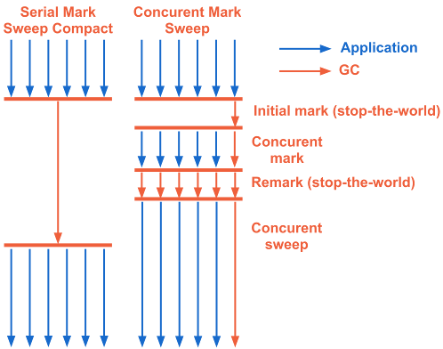

Your browser doesn't support the features required by impress.js, so you are presented with a simplified
version of this presentation.
For the best experience please use the latest Chrome, Safari or Firefox browser.
Garbage Collector
и управление памятью
в HotSpot JVM
Concurrent Mark Sweep (CMS)
Особенности:
Минимум stop-the-world пауз
Бoльшую часть работы выполняется одновременно с приложением
Также основан на поколениях
Работа с YoungGen аналогична ParallelGC
Дольше работает, влияет на производительность
Включение: -XX:+UseConcMarkSweepGC
CMS, OldGen
initial mark
Короткая stop-the-world пауза
Поиск корневых ссылок на объекты(в стеке потоков приложения)
concurrent mark
Выполняется параллельно с приложением
Поиск достижимых объектов из корневых ссылок
remark
Короткая stop-the-world пауза
Окончательная перепроверка помеченных объектов
Выполняется в нескольких потоках
concurrent sweep
Удаление мусора в параллельном режиме
MSC vs CMS

CMS, необходимо учитывать
Разделяет ресурсы с приложением
Лучше использовать на железе с более 2-х CPU
Не уплотняет OldGen
Использует free-list для хранения аддресов участков свободной памяти
Переход в MSC, если нет достаточного свободного места для нового объекта
Стоит использовать, если ваше приложение чувствительно к паузам
далее